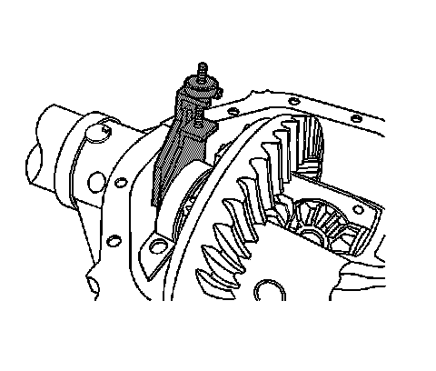

Differential Side Bearing Preload Adjustment (9.5, 9.5LD Inch Axles)
Differential Side Bearing Preload Adjustment (9.5, 9.5LD Inch Axles)
Tools Required
^ J 22779 Side Bearing Backlash Gage
^ J 24429 Side Bearing Backlash Spanner
Important:
^ Ensure that the side bearing surfaces in the axle housing are clean and free of burrs. If the original bearings are to be reused, the original bearing cups must also be used.
^ The drive pinion bearing preload must be within specifications before the differential side bearing preload adjustment can be performed.
^ The differential side bearings must be initially preloaded in order to determine the backlash of the gear set. After the backlash is set, the final bearing preload is set.
Caution: To prevent personal injury and/or component damage, support the differential case when removing the case from the axle housing. If the case is not supported, the differential case could fall and cause personal injury or damage to the differential case.
1. Remove the differential assembly, if necessary.
2. Measure the rotating torque of the drive pinion bearing using an inch-pound torque wrench.
The rotating torque of the drive pinion should be 1.7-3.4 Nm (15-30 lb in) for new bearings or 1.1-2.3 Nm (10-20 lb in) for used bearings.
3. If the rotating torque of the drive pinion is less than 1.7 Nm (15 lb in) for new bearings or 1.1 Nm (10 lb in) for used bearings, tighten the pinion in small increments until the specified rotating torque is obtained.
4. If the rotating torque of the drive pinion is greater than 3.4 Nm (30 lb in) for new bearings or 2.3 Nm (20 lb in) for used bearings, remove the drive pinion and replace the collapsible spacer and re-install the drive pinion. Refer to Drive Pinion Bearings Replacement.
5. Install the differential assembly, if necessary.
6. Support the differential assembly in order to prevent the differential assembly from falling out of the axle housing.
Important: Do not force the ring gear into contact with the drive pinion.
7. Slide the differential case assembly towards the right side axle housing until the ring gear contacts the drive pinion.
This is the ZERO backlash point.
If the ZERO backlash cannot be obtained, turn the differential bearing adjuster nut into the axle housing using the J 24429 until the ring gear fully contacts the drive pinion to obtain the ZERO backlash.
8. While holding the ring gear against the pinion, turn the differential bearing adjuster nut out from the axle housing using the J 24429 until it contacts the differential side bearing.
9. Turn the adjuster nut out from the axle housing an additional 2 slots using the J 24429 in order to obtain the initial backlash adjustment.
10. Install the adjuster nut lock and the adjuster nut lock bolt.
11. Remove the left side differential bearing cap bolts.
12. Remove the left side differential bearing cap.

13. Install the J 22779 into the left side axle housing between the differential bearing bore and the differential bearing cup.
Important: Over-tightening may spread the axle housing and result in incorrect shim selection.
14. Tighten the knob of the J 22779 until there is moderate drag when the J 22779 is moved.
15. Remove the J 22779.
16. Measure the J 22779 in 3 locations.
17. Calculate the average of the 3 measurements.
The resulting value is the shim thickness required in order to set the initial backlash of the differential assembly.
18. Select a service shim of approximately the same thickness to install into the axle housing.
Verify the thickness of the service shim using a micrometer.
19. Install the service shim into the axle housing between the differential bearing bore and the differential bearing cup.
20. Install the left side differential bearing cap.
21. Install the left side differential bearing cap bolts.
Tighten the differential bearing cap bolts finger-tight. Do not torque the bolts at this time.
22. Remove the differential bearing adjuster nut lock bolt.
23. Remove the differential bearing adjuster nut lock.
24. Firmly tighten the differential bearing adjuster nut using the J 24429 in order to force the differential case assembly into solid contact with the service shim.
25. Rotate the pinion several times in order to seat the bearings.
26. Loosen the differential bearing adjuster nut using the J 24429 until the nut is free from the differential side bearing.
27. Tighten the differential bearing adjuster nut using the J 24429 until the differential bearing adjuster nut contacts the bearing.
28. Once the right differential bearing adjuster contacts the differential bearing, tighten the differential bearing adjuster nut using the J 24429 the following additional amounts:
^ For new bearings, tighten the differential bearing adjuster nut an additional 3 slots.
^ For used bearings, tighten the differential bearing adjuster nut an additional 2 slots.
29. Install the right differential bearing adjuster nut lock.
30. Install the right differential bearing adjuster nut lock bolt.
Do not torque the bolt at this time.
Notice: Refer to Fastener Notice.
31. Tighten the bearing cap bolts.
Tighten the bearing cap bolts to 85 Nm (63 lb ft).
32. Tighten the differential bearing adjuster nut lock bolt.
Tighten the differential bearing adjuster nut lock bolt to 26 Nm(19 lb ft).
33. Measure the drive pinion and differential case side bearing preload using an inch-pound torque wrench.
Rotate the pinion several times to ensure the bearings have seated.
The rotating torque of the drive pinion and differential case bearings should be 3.9-6.2 Nm (30-55 lb in) for new bearings or 2.8-5.1 Nm (25-45 lb in) for used bearings.
Record the measurement.
34. Calculate the differential side bearing preload by subtracting the drive pinion preload, measured in Step 2, from the drive pinion and differential case bearing preload, measured in Step 33.
Multiply the value obtained by the axle ratio.
The differential case side bearing preload should be 1.7-4.0 Nm (15-35 lb in).
35. If the differential case side bearing preload is not within specifications, increase or decrease the shim thickness as necessary in order to increase/decrease the side bearing preload.
36. Once the differential side bearing preload is correct, measure the drive pinion to differential assembly backlash and adjust, if necessary. Refer to Backlash Adjustment.
Differential side bearing shims are available in the following sizes:
^ 5.59 mm (0.220 in)
^ 5.64 mm (0.222 in)
^ 5.69 mm (0.224 in)
^ 5.74 mm (0.226 in)
^ 5.79 mm (0.228 in)
^ 5.84 mm (0.230 in)
^ 5.89 mm (0.232 in)
^ 5.94 mm (0.234 in)
^ 5.99 mm (0.236 in)
^ 6.05 mm (0.238 in)
^ 6.10 mm (0.240 in)
^ 6.15 mm (0.242 in)
^ 6.20 mm (0.244 in)
^ 6.25 mm (0.246 in)
^ 6.30 mm (0.248 in)
^ 6.35 mm (0.250 in)
^ 6.40 mm (0.252 in)
^ 6.45 mm (0.254 in)
^ 6.50 mm (0.256 in)
^ 6.55 mm (0.258 in)